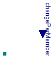
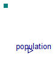
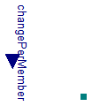
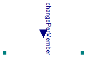
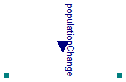

As population change per one individual

Extends from Interfaces.ConditionalLifeTime (Input of population change per one population member vs. parametric lifetime).
| Type | Name | Default | Description |
|---|---|---|---|
| Time | LifeTime | 1e-8 | Mean life time for population (=1.44*halftime) if useChangePerMember=false [s] |
| External inputs/outputs | |||
| Boolean | useChangePerMemberInput | false | =true, if real input connector is used instead of parameter LifeTime |
| Type | Name | Description |
|---|---|---|
| input PopulationChangePerMemberInput | changePerMember | [1/s] |
| PopulationPort_a | port_a |

Extends from Icons.Population, SteadyStates.Interfaces.SteadyState (Abstract class for any dynamic state calculation (for any derivation), which is driven by SimulationType option.).
| Type | Name | Default | Description |
|---|---|---|---|
| Initialization | |||
| Population | population_start | 1e-8 | Initial population size in compartment [1] |
| IO | |||
| Functions to read or store | |||
| replaceable package Utilities | Types.FilesUtilities (direct... | ||
| Initialization | |||
| Real | state_start | population_start | State start or init value |
| Value I/O | |||
| String | storeUnit | "1" | Unit in Utilities input/output function |
| String | stateName | getInstanceName() | Name in Utilities input/output function |
| Boolean | LOAD_STARTS | false | Load start value of state |
| Boolean | SAVE_RESULTS | false | Save final state values |
| Boolean | SAVE_COMPARISON | false | Compare final state values with original values |
| Equilibrium | |||
| Simulation | |||
| SimulationType | Simulation | Types.SimulationType.NormalI... | Dynamic with Initialization or Steady State |
| Boolean | isDependent | false | =true, If zero flow is propagated in eqiulibrium through resistors, impedances, reactions, etc. |
| Solver | |||
| Numerical support of very huge populations | |||
| Population | NominalPopulation | 1 | Numerical scale. Default is 1, but for huge amount of cells it should be any number in the apropriate numerical order of typical amount. [1] |
| Numerical support of very fast or very slow changes | |||
| PopulationChange | NominalPopulationChange | 1/(60*60*24) | Numerical scale. Default change is 1 individual per day, but for much faster or much slower chnages should be different. [1/s] |
| Type | Name | Description |
|---|---|---|
| PopulationPort_b | port | |
| output PopulationOutput | population | [1] |
2014
Marek Matejak, Charles University, Prague, Czech Republic
Extends from Modelica.Icons.Package (Icon for standard packages).
| Name | Description |
|---|---|
| Population | |
| Reproduction | As population change per one individual |
| Mortality | As population change per one individual |
| Stream | As population change per one individual |
| Change |
As population change per one individual

Extends from Interfaces.ConditionalLifeTime (Input of population change per one population member vs. parametric lifetime).
| Type | Name | Default | Description |
|---|---|---|---|
| Time | LifeTime | 1e-8 | Mean life time for population (=1.44*halftime) if useChangePerMember=false [s] |
| External inputs/outputs | |||
| Boolean | useChangePerMemberInput | false | =true, if real input connector is used instead of parameter LifeTime |
| Type | Name | Description |
|---|---|---|
| input PopulationChangePerMemberInput | changePerMember | [1/s] |
| PopulationPort_b | port_b |
As population change per one individual

Extends from Interfaces.OnePort (Partial change of population beween two ports without its accumulation), Interfaces.ConditionalLifeTime (Input of population change per one population member vs. parametric lifetime).
| Type | Name | Default | Description |
|---|---|---|---|
| Time | LifeTime | 1e-8 | Mean life time for population (=1.44*halftime) if useChangePerMember=false [s] |
| External inputs/outputs | |||
| Boolean | useChangePerMemberInput | false | =true, if real input connector is used instead of parameter LifeTime |
| Type | Name | Description |
|---|---|---|
| PopulationPort_b | port_b | |
| PopulationPort_a | port_a | |
| input PopulationChangePerMemberInput | changePerMember | [1/s] |

Extends from Interfaces.OnePort (Partial change of population beween two ports without its accumulation), Interfaces.ConditionalChange (Input of population change vs. parametric constant change).
| Type | Name | Default | Description |
|---|---|---|---|
| PopulationChange | PopulationChange | 0 | Population change if useChangeInput=false [1/s] |
| External inputs/outputs | |||
| Boolean | useChangeInput | false | =true, if real input connector is used instead of parameter PopulationChange |
| Type | Name | Description |
|---|---|---|
| PopulationPort_b | port_b | |
| PopulationPort_a | port_a | |
| input PopulationChangeInput | populationChange | [1/s] |